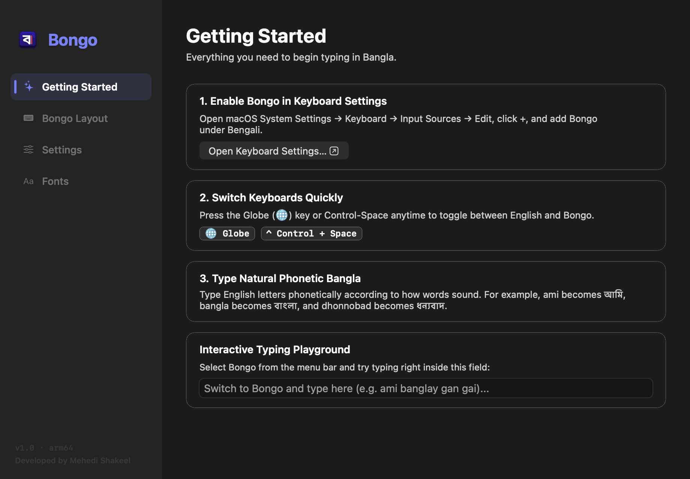
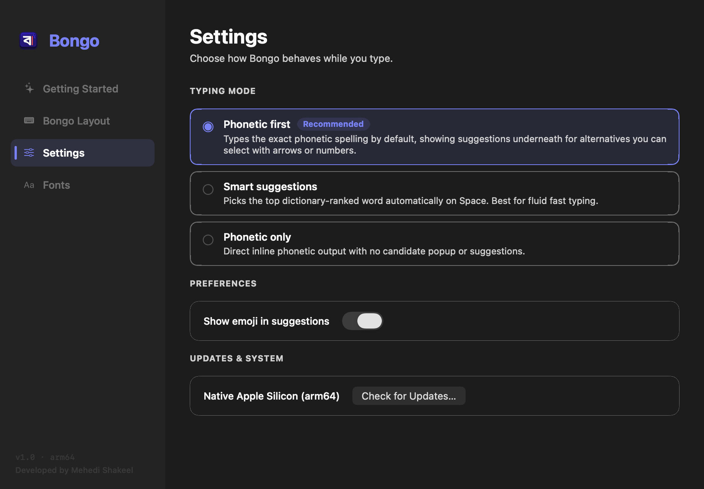
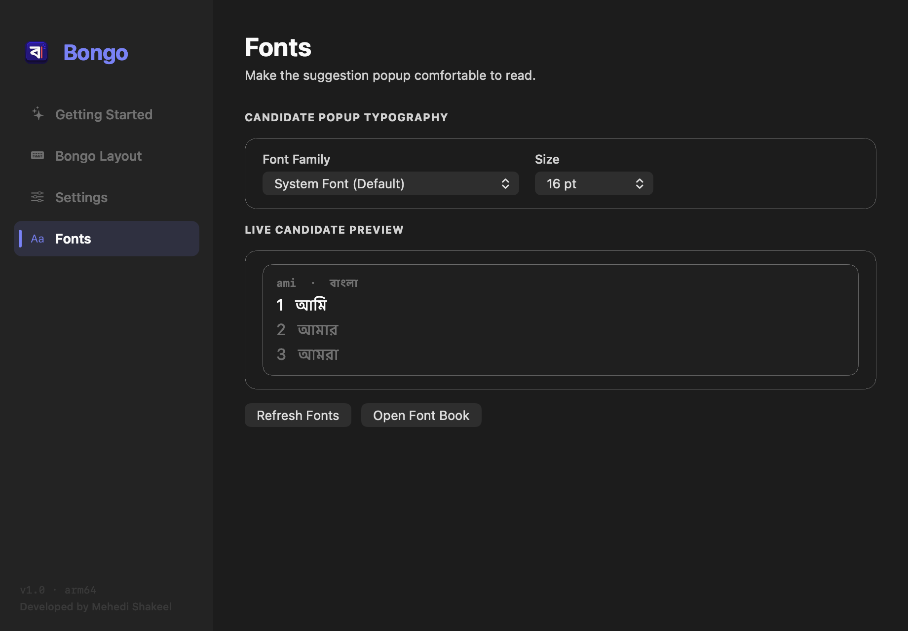
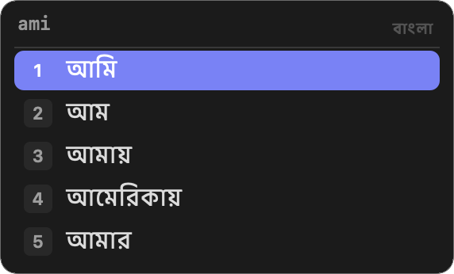

Native Bangla typing.
Built for Apple Silicon.
Fast, lightweight, and private. Type naturally in Bengali across Safari, Notes, Word, Slack, and Terminal on macOS.
Simple. Native. Uncompromised.
Designed specifically for the Apple Silicon era, replacing legacy Intel tools with pure macOS performance.
Apple Silicon Native
Compiled strictly for arm64. Zero Intel baggage, zero Rosetta translation, and under 15 MB of resident memory with instant wake.
- Target: M1, M2, M3, M4+
- Core: Static Rust engine (riti)
- UI: Pure Swift & Cocoa
100% On-Device Privacy
Runs entirely within macOS InputMethodKit sandbox. Your typing and dictionary stay strictly local on your Mac with zero network access.
- Telemetry: 0 KB transmitted
- Network: 0 entitlements requested
- Permissions: No keylogging access
Avro Phonetic Standard
Type naturally according to English sounds (ami → আমি). Supported by an offline 150,000+ word lexicon with real-time suggestions.
- Dictionary: 150K+ verified words
- Modes: Phonetic, Smart, Direct
- Fonts: Custom Bengali typeface
Familiar Apple Design Language
Settings and candidate controls designed to match macOS Sequoia, Sonoma, and Ventura.

Frictionless Onboarding
Direct link to macOS Keyboard settings, quick shortcut cheat sheet, and a built-in playground to verify your typing setup instantly.

3 Flexible Typing Modes
Choose between Phonetic first (recommended), Smart suggestions, or Phonetic only. Toggle emoji suggestions and check for updates effortlessly.

Customizable Bengali Typography
Select any Bengali font installed on your Mac (Kohinoor Bangla, Noto Sans Bengali, Ekush, July, etc.) with real-time candidate size adjustment.

Tactile macOS Candidate HUD
Floating translucent candidate window with fast numbered shortcuts [1], [2], [3], smooth arrow navigation, and high-contrast pill selection.
Up and running in seconds.
No command line, no root passwords, no complicated config files.
Download & Drag
Open Bongo-1.0-macos-arm64.dmg and drag Bongo.app into your Applications folder.
Launch Once
Open Bongo from Applications. It registers the input method service with macOS automatically.
Enable & Type
In System Settings → Keyboard → Input Sources, click + and add Bongo. Switch anytime with Globe / fn or Ctrl + Space.
Pro tip: Quick keyboard switching
Tap the Globe (fn) key on your Mac keyboard or press Control + Space to seamlessly toggle between English and Bongo without lifting your fingers from the keyboard.
Phonetic Key Map
Search any Bengali sound or character to look up its phonetic keystroke.
| Type | Bangla Glyph | Keystroke | Example Word |
|---|---|---|---|
| Vowel | অ | o | oneck (অনেক) |
| Vowel | আ | a | ami (আমি) |
| Vowel | ই | i | iti (ইতি) |
| Vowel | ঈ | I | Ishor (ঈশ্বর) |
| Vowel | উ | u | uth (উঠ) |
| Vowel | ঊ | U | Ushor (ঊষর) |
| Vowel | ঋ | rri | rrishi (ঋষি) |
| Vowel | এ | e | ektara (একতারা) |
| Vowel | ঐ | OI | OIkyoboddho (ঐক্যবদ্ধ) |
| Vowel | ও | O | Ol (ওল) |
| Vowel | ঔ | OU | OUshodh (ঔষধ) |
| Consonant | ক | k | kothay (কোথায়) |
| Consonant | খ | kh | khobor (খবর) |
| Consonant | গ | g | gan (গান) |
| Consonant | ঘ | gh | ghor (ঘর) |
| Consonant | ঙ | Ng | roNg (রং) |
| Consonant | চ | c / ch | chad (চাঁদ) |
| Consonant | ছ | Ch | Chobi (ছবি) |
| Consonant | জ | j | jol (জল) |
| Consonant | ঝ | jh | jhor (ঝড়) |
| Consonant | ঞ | NG | miya (মিঞা) |
| Consonant | ট | T | Taka (টাকা) |
| Consonant | ঠ | Th | Thik (ঠিক) |
| Consonant | ড | D | Daak (ডাক) |
| Consonant | ঢ | Dh | Dhak (ঢাক) |
| Consonant | ণ | N | gun (গুণ) |
| Consonant | ত | t | tumi (তুমি) |
| Consonant | থ | th | thako (থাকো) |
| Consonant | দ | d | din (দিন) |
| Consonant | ধ | dh | dhon (ধন) |
| Consonant | ন | n | naam (নাম) |
| Consonant | প | p | pani (পানি) |
| Consonant | ফ | f / ph | ful (ফুল) |
| Consonant | ব | b | boi (বই) |
| Consonant | ভ | bh / v | bhalo (ভালো) |
| Consonant | ম | m | maa (মা) |
| Consonant | য | z | zodi (যদি) |
| Consonant | র | r | raat (রাত) |
| Consonant | ল | l | laal (লাল) |
| Consonant | শ | S / sh | shanti (শান্তি) |
| Consonant | ষ | Sh | kaShTo (কষ্ট) |
| Consonant | স | s | shob (সব) |
| Consonant | হ | h | haat (হাত) |
| Consonant | ড় | R | boRo (বড়) |
| Consonant | ঢ় | Rh | aaRha (আষাঢ়) |
| Consonant | য় | y | bhay (ভয়) |
| Consonant | ৎ | `t | utshob (উৎসব) |
| Consonant | ং | ng | shonglap (সংলাপ) |
| Consonant | ঃ | : | du:kho (দুঃখ) |
| Consonant | ঁ | ^ | cha^d (চাঁদ) |
| Conjunct | ক্ষ | kkh | kkhoma (ক্ষমা) |
| Conjunct | জ্ঞ | jnj / gy | gyan (জ্ঞান) |
| Conjunct | ক্ত | kt | rokto (রক্ত) |
| Conjunct | ন্দ | nd | anondo (আনন্দ) |
| Conjunct | ঙ্গ | ngg | bongo (বঙ্গ) |
| Conjunct | ষ্ণ | ShN | krishno (কৃষ্ণ) |
| Number | ১ ২ ৩ ৪ ৫ | 1 2 3 4 5 | Bengali Numerals |
| Number | ৬ ৭ ৮ ৯ ০ | 6 7 8 9 0 | Bengali Numerals |
Frequently Asked Questions
Clear information regarding security, compatibility, and day-to-day use.
Is Bongo compatible with all Apple Silicon Macs (M1 through M4+)?
Yes, 100%. Bongo is compiled natively for Apple Silicon (arm64). It runs directly on every MacBook Air, MacBook Pro, Mac mini, iMac, Mac Studio, and Mac Pro powered by M1, M2, M3, M4, or future M-series processors running macOS 13 (Ventura), macOS 14 (Sonoma), or macOS 15 (Sequoia).
How is Bongo different from Apple's built-in Bengali keyboard?
Apple's built-in keyboard uses traditional Bengali layout mapping which requires memorizing special character positions. Bongo provides intuitive Avro Phonetic typing: write Bengali sounds phonetically using standard English letters (e.g. typing ami produces আমি, dhonnobad produces ধন্যবাদ), with a 150,000+ word dictionary and instant autocorrect.
Does Bongo track what I type or require accessibility permissions?
Absolutely not. Bongo is built on Apple's official native InputMethodKit framework. Unlike unofficial keyboard tools, Bongo does not require Accessibility permissions, does not log keystrokes, and has zero network telemetry. Your typing and personalized word selections remain strictly on your local device.
How do I switch quickly between English and Bongo?
Simply tap the Globe key (fn / Globe) on your modern Mac keyboard, or press Control + Space. You can also click the input switcher icon in the top macOS menu bar anytime.
Can I change the font style or size of candidate suggestions?
Yes! Open Bongo from your Applications folder (or choose "Settings..." from the Bongo menu bar item), navigate to the Fonts tab, and pick any installed Bengali font on your Mac (such as Kohinoor Bangla, Noto Sans Bengali, Ekush, etc.) with custom sizing and real-time live preview.
Is Bongo completely free and open source?
Yes. Bongo is 100% free with no subscriptions, in-app purchases, or ads. The entire codebase is open source under the MPL-2.0 license and available on GitHub.